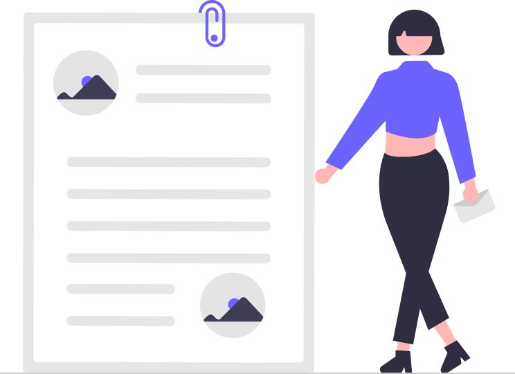

Safekids

SafeKids.com is one of the oldest and most enduring sites for Internet safety. It’s founder and editor, Larry Magid, is the author of the original National Center for Missing & Exploited Children’s 1994 brochure, “Child Safety on the Information Highway.” He is co-director of ConnectSafely.org and a technology journalist.
Protecting Kids Online

Threats to children’s internet safety include invasions of privacy, cyberbullying, sexting and harassment. Options to protect your children include parental controls, apps and tracking software. But the most effective way to keep your kids safe is to talk with them about online risks, how to avoid them and how they can come to you when something goes wrong.
Coronavirus Response

If you thought it was tough to keep kids off the internet before COVID-19, it’s almost impossible now. Between mandated online school and playdates via video chat, chances are you and your kids are spending a lot more time online in quarantine than ever before. For some, it may be the first time you’ve explored this new frontier with your little one.
Safety Center

Children today are growing up with technology, not growing into it like previous generations. So we’re working directly with experts and educators to help you set boundaries and use technology in a way that’s right for your family.
Internet Safety for Kids

Kids should talk with a trusted adult so they understand online risks, only chat with people they know, ensure their online accounts are private, block people they don’t know or trust, and trust their instinct—if something makes them feel uncomfortable, tell a trusted adult about it.
Safewise
